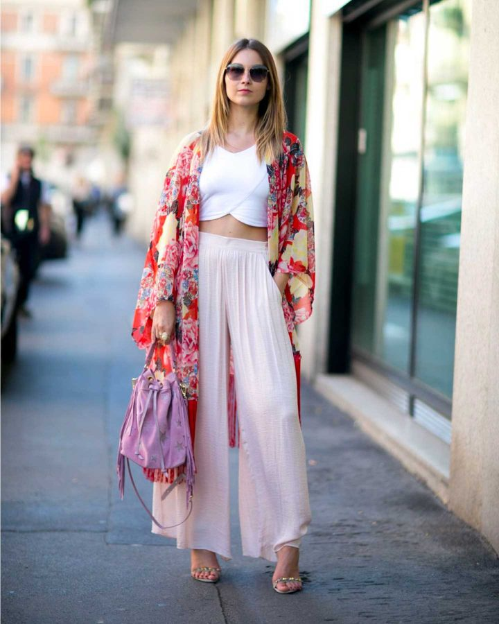

Inspiration orientale, originalité garantie. Le kimono n’est pas réservé aux tatamis (au contraire), c’est même la pièce phare de la mi-saison, quand on sait le combiner. Apprenez à porter un kimono cette saison, sans fausse note.
Un peu d’histoire : qu’est-ce qu’un kimono ?
Pas besoin d’avoir une maîtrise en Histoire de la mode pour savoir qu’on doit le kimono au vestiaire japonais. Pour l’anecdote, sachez que le mot se compose de « kiru » (porter) et de « mono » (chose). Autrement dit, il incarne la définition même du vêtement : la chose que l’on porte sur soi.
Ses manches carrées et sa coupe rectangulaire lui donnent à l’origine une forme en T. Aujourd’hui, il prend des formes très diverses, se porte dans tous les tissus et les textures et se pare des couleurs et motifs tendance du moment. Cette saison, attendez-vous à un défilé de tie & dye,
Comment porter le kimono cette saison
La tendance de la saison est aux imprimés voyants sur un kimono (Paisley, floral ou encore tie & dye).
Notre modèle ? Le défilé Dior printemps-été 2021 qui a remplacé la veste de mi-saison par le kimono. On y a repéré des modèles coupés à la taille comme des longueurs flottantes aux chevilles, avec un net avantage du satin et du lin.
Si vous manquiez d’inspiration pour combiner un kimono, sachez qu’il n’y a pas que l’option jean ! Kimono et jupe midi, jupe-culotte, short en laine : laissez-vous surprendre par l’éventail de looks possibles avec cette perle orientale.
Astuces mode pour porter un kimono : À faire / À ne pas faire
On fonce (SI)
- Si vous êtes plutôt petite en taille, des espadrilles compensées se marient très bien avec un kimono, tout en étirant votre silhouette.
- Pour un look casual, choisissez un kimono coupé à la taille et optez pour une paire de sneakers, un mix très tendance.
- Avec kimono à imprimés, associez une tenue de couleur neutre, unie : votre look casual vient de passer au niveau supérieur !
On évite (NO)
- Avec une morphologie ronde ou en ovale, évitez de fermer le kimono pour ne pas trop marquer la ligne de l’abdomen. À l’inverse, porté ouvert, il crée de la verticalité et styliste votre silhouette.
- Pour mettre votre silhouette en valeur, évitez l’excès de largeur dans les manches et préférez des manches fermées.
- Si vous cherchez à illuminer votre visage, évitez le kimono en lin dans une tonalité sombre. Foncez plutôt sur les matières satinées ! Vous êtes aventurière ? Osez la version longue, dans un rouge satiné voyant, que vous pourrez aussi recycler en robe.
Vos looks de printemps avec un kimono
Le basique : jean et kimono
Pour celles qui ont envie de tester sans trop se mouiller, le look urbain tendance du moment est facile à créer : un jean, un haut uni, un kimono à imprimé original.
Astuce de styliste : si vous préférez le kimono uni, évitez le réflexe du noir et choisissez la couleur qui vous mettra en valeur.
Pour la version chic, complétez votre look avec une paire d’escarpins ou de talons fins.
Le look boho ou de soirée : robe et kimono
Voici un look boho digne des tapis rouges. Une robe près du corps, robe-tube ou robe longue fluide avec une coupe droite, que vous allez sublimer avec un kimono ouvert.
L’alliance des deux va créer de la verticalité, pour une silhouette rallongée et une élégance très bohème.
Vos accessoires pour ce look : un sac mini en daim, type bandoulière, et une paire de spartiates dans la tendance du moment.
Le trendy estival : pantalon fluide et kimono
pantalons « wide-legs » à coupe large et fluide : la tendance du moment est à la liberté de mouvement.
Faites-vous plaisir en y ajoutant votre kimono, qui va amplifier votre sensation de légèreté. Le look est simple : une jupe-culotte, un caraco à col dentelle et près du corps pour souligner la silhouette, et un kimono coupé à la taille.
Pour un look parfait, fermez la ceinture du kimono, ajoutez un clutch bag et en route pour les soirées estivales !
Si cet article vous a donné envie, laissez un commentaire à votre , sur votre profil mode !